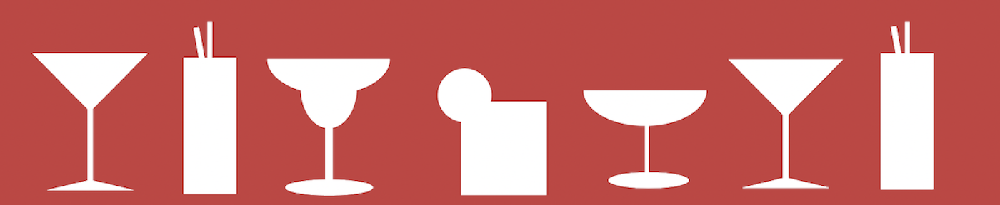

Cocktails

Man skal ikke gå mange meter i det indre København for at støde på en cocktailbar, Og det er der en god grund til: Vi elsker cocktails! Det ligner poesi i bevægelse, når bartenderen ryster deres kreationer ud af shakeren, men du kan sagtens lære at gøre dem kunsten efter.
Her finder du tre eksempler på de mest stilede cocktails gennem tiden. Vink farvel til filur, isbjørn og frozen daquiri, og træd for alvor ind i de voksnes rækker med tre pragteksemplarer på en bestilling på en af Københavns mange cocktailbarer.